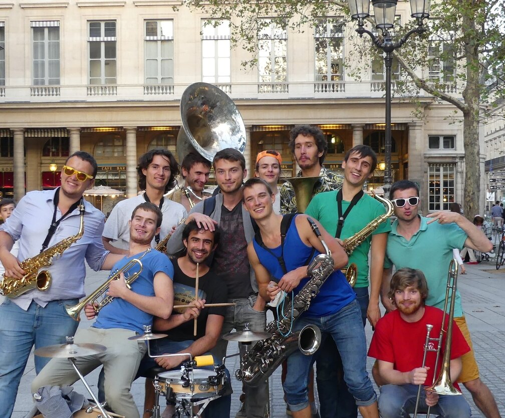

Loud'N Around, c'est avant tout un groupe d'amis passionés par la musique, le voyage et le partage. Découvrez les sans plus attendre.
L'équipe de Loud'N Around
François "Noé"
Noé, Martin, Denis... Notre président a plusieurs alias... Mais nous vous le présentons sous le nom de François ! Guitariste chanteur d'origine, notre paimpolais préféré a déjà beaucoup d'expérience de scène et le rythme dans la peau. Fort de sa voix puissante et ses talents de speaker sans pareil, il représente notre groupe. Ayant troqué sa guitare pour un sax ténor afin de participer au projet, ses growls fous lors de ses improvisations endiablées et son énergie phénoménale sauront mettre l'ambiance lors de nos sets, au rythme de ses compositions aux sonorités afro disco !
Antoine "Obal"
Surfeur barbu du bassin d'Arcachon, guitariste et trompettiste accompli, c'est cependant au trombone qu'Antoine rejoindra la formation. Sa grande musicalité et sa rigueur l'ont fait naturellement directeur musical du projet. C'est avec sagacité et bienveillance qu'il aide nos fanfarons à donner le meilleur d'eux-mêmes. Il met également à profit sa connaissance presque impie de la musique afin de développer un répertoire riche et original.

Hugo "Le Guichet"
Notre homme nous vient du sud de la France, de Nice pour être précis. Ayant découvert la musique et le trombone il y a deux ans, ça a été tout de suite le coup de foudre. C'est cette envie de partager cette découverte de la musique qui l'a mené a rejoindre le projet, tandis que sa perpétuelle bonne humeur et son contact facile l'ont naturellement orienté vers les pôles Pédagogie et ONG. Hugo a également la tête bien faite, rien ne lui échappe et il n'oublie rien, c'est pourquoi il porte aussi la casquette de responsable logistique du projet.
Antoine "Verdax"
Antoine Verdon nous vient du doux pays Breton, et est par conséquent mû d'une irrésistible envie de voyager et découvrir le monde. Toujours plein d'énergie, Antoine ne recule devant aucun défi, que ce soit un mur à escalader ou une expérience musicale et humaine ! En effet, il a entrepris d'apprendre le souba et la musique en un temps record, et sa détermination lui a permis de réussir avec succès ! En tant que basse, il soutient tout le reste du groupe, que ce soit musicalement ou par son éternel enthousiasme. Son envie de mener une action durable, et d'effectuer un projet qui apporte le plus possible aux enfants le conduiront à endosser la responsabilité du pôle ONG. Son désir profond ? Partir en Afrique !
Édouard "Souba"
Trompettiste de haute voltige, musicien et compositeur de talent, aucune corde ne manque à l'arc d'Édouard ! Trésorier du projet, son aptitude à rester zen et souriant dans n'importe quelle situation est un atout certain pour le groupe. Son sourire revigorant et son humour en toute circonstance soutiennent l'affection qu'il partage avec chacun des membres du groupe. Baroudeur dans l'âme, il ne pouvait manquer un projet comme Fanfare sans Frontières pour rien au monde !
Charles "Yoshi"
Le sax, ça le connaît ! Saxophoniste de formation, Charles rejoint le projet à l'alto. Fin connaisseur des instruments low-tech, il est également le responsable pédagogie du projet, et ses talents de bricoleur sauront se faire apprécier, aussi bien pour fabriquer un trombone que réparer une voiture. Également grand voyageur, l'aventure Fanfare sans Frontières était décidément faite pour lui !
Jean-Michel "Gaston"
Notre quatrième saxophone et deuxième alto nous vient tout droit d’Alsace. Toujours ouvert à de nouvelles expériences, il s'est essayé à la musique au sein de la fanfare de Centrale, et le moins que l'on puisse dire c'est que ça lui a réussi !
Son enthousiasme pour cette passion nouvellement découverte le transforme en véritable rock star pendant les sets, à genoux pendant ses solos. Son contact facile et sa bonne humeur naturelle l'ont immédiatement fait membre des pôles ONG et pédagogie.
Owain
Il est anglais, il est blond, il est beau, il est saxophoniste, que manque-t-il à Owain ? Notre saxophone baryton, ancien président de la fanfare de CentraleSupélec, est tout naturellement devenu le responsable prestation du projet. Habile en négociation, fin stratège et logisticien, désireux de parcourir le monde et musicien depuis l'enfance, l'aventure Fanfare sans Frontières lui va comme un gant !
Jean-Baptiste "Maca"
Membre indispensable du groupe en sa qualité de batteur, s'il y a bien deux choses que sait faire Jean-Baptiste, c'est de la musique et se faire aimer des enfants !
En effet, notre homme est le chef musical de la fanfare de CentraleSupelec, et président de l'association Oser qui fait du tutorat pour des lycéens. Son envie d'accomplir une action solidaire et de pratiquer la musique ne pouvait le conduire qu'à Fanfare sans Frontières, où il pratique la batterie et est membre des pôles Pédagogie et ONG.
Son contact très facile avec les enfants et son sens certain de la pédagogie et du rythme en font un atout majeur pour l'équipe.
Adrien "Kudja"
D'un an l'aîné des autres membres du projet, la passion pour la musique et la découverte de cet aventurier tourangeaux ne pouvaient que mener vers l'aventure Fanfare sans Frontières !
Euphoniste et soubassophoniste vétéran, c'est toutefois à la trompette que ce spécialiste des graves rejoint le projet LNA, agrémentant le répertoire du groupe de compositions aux basses marquées.
Armé d'une forte expérience en tournage et en montage, il officie le rôle de responsable communication du projet.
Julen "Baloo"
L'homme derrière l'euphonium, c'est lui, le légendaire Julen Dixneuf. Habitant du pays Basque, son envie d'exotisme et son désir de pratiquer la musique l'ont naturellement amené dans l'équipe Loud'n Around. Sa carrure imposante et son mètre 95 cachent en réalité un homme doux comme un agneau, serrant fort son euphonium contre son coeur.
Ses talents exceptionnels en informatique nous sont utiles en de nombreuses occasions, il est ainsi dans le pôle logistique et le pôle communication.
Bertille "Terb"
On ne la voit pas sur les photos car elle est derrière l'appareil ! C'est Bertille Daran, qui s'occupera du poste de média pendant l'aventure et s'essayera à capturer les expressions les plus intenses de nos visages lors de nos sets. Sans elle, pas de souvenirs de ces moments partagés, ce qui serait bien dommage car des souvenirs et des expériences il va y en avoir beaucoup.
Apportant une touche de féminité au groupe, Bertille vient du sud, et par tous les chemins elle y revient ! Motivée par le projet décrit par ses camarades de prépa, elle intègre le projet bien que venant, une fois n'est pas coutume, de l'ENSTA ParisTech, une école voisine de CentraleSupélec.